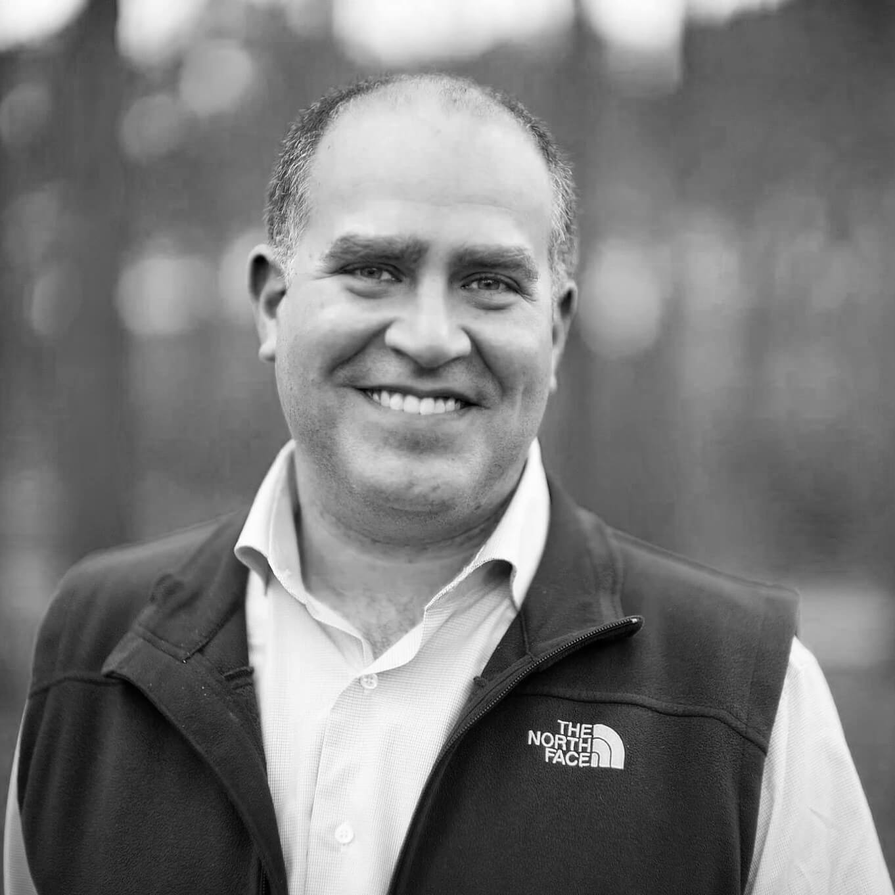

Reflections | Projections is a tech conference organized and run by students at the University of Illinois at Urbana-Champaign.
We draw students, speakers, and companies from around the world. Join us to listen to tech talks from across the industry, to participate in an Artificial Intelligence programming competition in Mechmania, to solve puzzles throughout the conference during PuzzleBang!, and to attend our job and startup fairs.
The conference is free and open to anyone regardless of age, major, job, or affiliation with the University of Illinois. So come join a discussion led by some of the brightest minds in the business about the bleeding edge of the tech industry!
You do not need to register for Reflections | Projections to attend; however, registering is the only way to guarantee you'll get a free conference t-shirt!
The Startup Fair at Reflections | Projections brings in many of the fastest-growing, most innovative startups from across the country to connect with the most entrepreneurial, driven students at Illinois. If you’re looking to dive off the deep end and work in a fast-paced, dynamic environment with brilliant co-workers, then the Startup Fair is the place for you. Every startup at the fair is offering hands-on experience, the ability to make a meaningful impact, and the chance to challenge yourself and learn faster than ever before. Make sure you attend the Startup Fair to interact with the breakthrough companies of the future.
The career fair at Reflections | Projections brings in some of the best companies from across the country and they’re all here to meet you! These companies want the cream of the crop and they know that R|P is the place to find it. So whether you’re into security, web development, or natural language processing, whether you’re an expert in your field, starting to get your head on straight, or even brand new to programming, come to our career and startup fairs and get your resume out there!
The 21st annual Military Electronic Combat Hardware Training Competition (Mechmania) is fast approaching! The competition ranks cyberwarriors by pitting them against each other in a simulated cyber-warfare environment. However, there is one major catch – since the United Nations Network Security Agency (UN-NSA) deems it too dangerous for human cyberwarriors to participate, they have instructed you to build a computer program to do so instead!
Should you accept this mission, you and up to 3 friends will have 24 hours to build, test, and deploy your automatic cyberwarriors against the world’s finest cybercommanders. The UN-NSA will provide meals and snacks to all participants as well as prizes for the best performances.
Good luck, cybercommander. You’ll need it out there.
<END TRANSMISSION>
PuzzleBang, the annual week-long puzzle contest, is back again in 2015! Teams will solve a series of puzzles throughout the week, concluding with a metapuzzle on Saturday. Just finding out about PuzzleBang? It's not too late! Grab a few friends and give this puzzle a shot!
deaR people at the acm reflections|projections powwow,
i hopE this invitation finds you in pleasance. due to your deeds from previous years, we have put together a purrfect event at the 21st r|p conference. my frienD, joseph lee marlin, have obtained quite the rigged artifact to show to the world, and we would like you, a part oF a vip audience, to have a look at it first. ii expect to be a blast of an event sonny boy. it’s a once in a lifetime experience that isn't for any mere muggle. I have told my tattoo-covered super close-friend, albert, to carry to you a handbook with relevant information. beware many are there robbers who wish to get their handS upon it. regardiing how to find the place… that’s handled by joseph, but i’m sure it’s a cincH for you to find the better path! i hope to spot you in the coming days
Alan Braverman (@alanb42) is an entrepreneur, investor & programmer. While earning his BS in Computer Science at Illinois, Alan also worked on early web browser, Mosaic. He was chairman of ACM @ UIUC during the 1994-95 school year, and helped plan the very first R|P conference. Since then, he’s co-founded several startups, including Xoom, Geni, Yammer & most recently, The Giant Pixel Corporation.
High-risk, high-reward careers
As you study Computer Science or a related field, you also plan your post-college career. Will you join a big, well-known company or a smaller operation where you can have more impact? Perhaps you’ll join a fledgling start-up or even launch your own company. In this talk, Alan Braverman will try to steer you towards the riskiest options (and convince you that they aren’t even all that risky).
Saturday at 5:00p
Anna Patterson is currently Vice President of Engineering, Artificial Intelligence for Google. Her current focus is text understanding. At Google, she was the architect of one of their largest search serving systems, TeraGoogle, and also led efforts in Web Search, Ads, and Shopping. She is also a co-founder of Progressive Women of Silicon Valley which helps host candidates and causes in Silicon Valley.
Saturday at 7:00p
Cassidy Williams is a software engineer and developer evangelist at Venmo. She graduated from Iowa State University in 2014, where she studied Computer Science. Since joining Venmo, Cassidy has worked with various organizations, including Hacker Fund as their Director of Outreach. She’s been included as one of Glamour Magazine's 35 Under 35 Who Are Changing Tech and messes with front-end web dev in her free time. Her favorite quote is from Helen Keller: "One can never consent to creep when one feels an impulse to soar.”
ES6 Party
The web is throwing an ES6 party, and you're invited. ECMAScript 2015 (6th Edition) is the latest version of the ECMAScript Language Specification standard. Commonly referred to as "ES6", it has changed the way we think about writing web applications for the better. In this talk, I'll be telling you the whos, the whats, the whens, the wheres, and the whys of ES6, the challenges it presents, and the advantages it provides.
Saturday at 1:00p
Craig Reynolds
Greg Baugues
Jason Tan
Craig Reynolds was a pioneer applying computer animation to special effects in feature films, to autonomous characters in games, and making tools for these fields. His research is on procedural models for geometry, animation, behavior and texture synthesis. Currently he writes vision software at Matterport in Mountain View, California. Like Howard Wolowitz, he has a masters degree from MIT (1978).
Computational Models of Natural Complexity
Procedural models allow simulation of complex natural phenomenon, which let us better understand the natural system. They also allow us to recreate the phenomenon and control it for use in animation, games and the arts. This talk will cover several such models, including: flocking and other group motion—stigmergy and collective construction—and the evolution of camouflage to avoid predation.
Friday at 5:00p
Greg was a student in the UIUC CS program way back at the turn of the millennium. He failed out in 2003 after struggling with a nasty bout of bipolar disorder and ADHD. Today he serves in his dream job as a developer evangelist at Twilio. He lives in Chicago with his wife and one year old daughter.
So many UIUC students are struggling alone with depression, anxiety, ADHD, bipolar and other mental illnesses. Unfortunately, there's a lot of stigma around these diseases, and we don't talk about it much because we're afraid of being shunned or being called lazy. After this talk, you'll have a better idea of how to recognize mental illnesses in yourself and others, how to seek professional help, and how to get rid of the crippling shame.
Saturday at 8:00p
Jason (@jasontan) is the Co-Founder and CEO of Sift Science, a San Francisco company that fights online fraud with large-scale, real-time machine learning. Before Sift, he served as CTO of BuzzLabs (acquired by InterActiveCorp), and as an engineer at two startups, Optify and Zillow. Jason graduated magna cum laude from the University of Washington in 2006 with a Computer Engineering degree. He enjoys chess, poker, fantasy football, and too many TV series (Arrested Development, Community). He strongly believes that hashtags should *not* be used in text messages.
Three sets of three lessons, each with a story.
Three lessons from life
Three lessons from starting and building a 50-person company
Three lessons from fighting online fraud with machine learning
Saturday at 10:00a
Jerry Talton
Katherine Scott
Michael Armbrust
Jerry Talton is the CEO of Apropose, a software company he co-founded in 2013 to bring data-driven solutions to web design problems. He received his PhD in computer science from Stanford University and BS and MS degrees from the University of Illinois at Urbana-Champaign. Prior to Apropose, he worked at Intel, Adobe, and NVidia, and taught at both Stanford and UC Santa Cruz.
Saturday at 11:00a
Katherine Scott is a founder and the lead software developer at Tempo Automation. Tempo is building the electronics factory of the future in San Francisco. At Tempo the factory’s front door is the customer’s Electronics Design Automation (EDA) software, where the Tempo Plugin provides real-time Design for Manufacture (DFM) feedback and cost quoting. When the design is ready Tempo's automated factory spins up, fabricates the design, and delivers it to the customer in as little as three days. Prior to Tempo Automation Katherine was a co-founder at Sight Machine and worked at Essess and a small mom-and-pop defense contractor.
What happens when you leave the cushy playground of academia to join the working world and build a start-up? What do you learn in the transition from student to entrepreneur? How do you go from crazy idea to venture backed start-up? After ten years of working in start-ups and R&D I think I may have some insights, or a least a list of things that I wish someone had told me when I was still wet behind the ears. This talk outlines ten hard-learned and actionable lessons from the real world. Topics covered include: CS 666: the dark arts of computer science, how to get an MBA from the Wu-Tang School of Business, sleeping on the floor and eating boiled newspapers, and the 80/20 rule.
Friday at 7pm
Michael Armbrust was the initial contributor of Spark SQL and now leads development of the project at Databricks. He received his PhD from UC Berkeley in 2013. His thesis focused on building systems that allow developers to rapidly build scalable interactive applications, and specifically defined the notion of scale independence. His interests broadly include distributed systems, large-scale structured storage and query optimization
Apache Spark is an open-source distributed computing framework, initially created by graduate students at UC Berkeley. By providing rich APIs and in-memory primitives, Spark allows users to analyze huge amounts of data at record speeds, using 2-5x less code that other frameworks. I'll describe Spark and do a live demo of interactive analysis on millions of tweets. I'll also talk about the open-source community and how you can get involved in the project.
Saturday at 2:00p

Roy Bahat
Winnie Cheng
Yisong Yue
Roy Bahat leads Bloomberg Beta, an early-stage venture fund backed by Bloomberg L.P. that invests in startups that make work better, and (inspired by software engineers) open sourced its investment manual. Roy is a lecturer at UC Berkeley. He was the founding chairman of OUYA, a Kickstarter-backed game console, and president of IGN Entertainment. He hired software engineers without looking at their resumes. Roy graduated from Harvard College, and was a Rhodes Scholar.
Your career to come -- it will be a mess
The next 20 years of work will look different than the last 50. Instead of having a linear succession of jobs, more people now have a portfolio of activities. For people who practice a trade -- engineers -- or for startup founders, since their lives are less often “ready for LinkedIn,” how do you prepare to succeed in that world, where skills and relationships matter more than titles?
Thursday at 8:00p
Winnie Cheng is Chief Data Scientist at Bankrate. She is currently leading the design of a real-time automated site optimization platform and is building out data science and analytics teams to apply machine learning techniques to various business problems. Prior to Bankrate, Winnie successfully deployed analytics solutions at JP Morgan, American Express and IBM Watson Research Center. Winnie holds a PhD in Computer Science from MIT and MS in Electrical Engineering from Stanford.
Data Science and Your Financial Journey
Navigating our financial journey is a daunting task yet doing it well is crucial to achieving our life goals. How to purchase a home? What is a mortgage? How do I save for retirement? Bankrate.com is a personal finance website aimed at empowering the public with educational articles and all the information you need to make important financial decisions at all life stages. It is also a one-stop marketplace that connects visitors to financial services providers. Data science plays a key role in ensuring visitors to our site get what they are looking for and that we uphold our reputation as a trusted marketplace. In this talk, I will share several exciting machine learning projects and internal data products that we are working on to achieve these goals.
Saturday at 4:00p
Yisong Yue is as assistant professor at Caltech, where he works on machine learning. An alumnus of UIUC, Yisong was a very active member of ACM@UIUC, being the SIGGRAPH Chair in 2003/2004 and Treasurer in 2004/2005. Prior to joining Caltech, Yisong received his PhD from Cornell, had a postdoc at CMU, and was a research scientist at Disney.
Machine Learning for Sports, Animation & Medicine
Machine learning has become very popular in our increasingly data-rich world. But the public attention has largely been focused on applications in recommender systems, text, and images. In this talk, I will describe some new applications to domains such as sports analytics, data-driven animation, and personalized medicine. Come for the talk, stay for the demos =)
Saturday at 3:00p
Gopal Kakivaya
Gopal Kakivaya is a CVP working on Microsoft Azure cloud computing initiative. He has spent well over a decade working at the forefront of Microsoft’s distributed-computing efforts. The highlight of his work has been leading the conception, incubation, development, and successful deployment of a ground-breaking distributed systems technology called “Azure Service Fabric.” Service Fabric is the distributed systems foundation on which many Microsoft’s internet scale services like Azure DB, Bing Cortana, Windows Intune, Azure Resource Providers, etc. are built. With Service Fabric, Gopal has demonstrated how to combine the scale and decentralization characteristics of edge (P2P) networks with the consistency guarantees demanded by the datacenter networks. Service Fabric creates a scale-free self-healing mesh of commodity computers that can be extended all the way from the cloud to the edge. It has solved many challenging and important distributed systems problems like reliable failure detection, perfect leader election, consensus, failover, and much more.
Friday at 8:00p
Conference Schedule
Thu, Oct 1
4:00pStartup Panel2405
5:00pStartup FairAtrium
8:00pSpeaker: Roy Bahat1404
Fri, Oct 2
9:00aBreakfastAtrium
10:00aJob FairAtrium
5:00pSpeaker: Craig Reynolds1404
6:00pDinner/GoDaddy TalkAtrium
7:00pSpeaker: Katherine Scott1404
8:00pSpeaker: Gopal Kakivaya1404
9:00pAlumni Event
9:00pMechmania Opening1404
Sat, Oct 3
9:00aBreakfastAtrium
10:00aSpeaker: Jason Tan1404
11:00aSpeaker: Jerry Talton1404
12:00pLunch/Microsoft TalkAtrium
1:00pSpeaker: Cassidy Williams1404
2:00pSpeaker: Michael Armbrust1404
3:00pSpeaker: Yisong Yue1404
4:00pSpeaker: Winnie Cheng1404
5:00pSpeaker: Alan Braverman1404
6:00pDinner/Palantir TalkAtrium
7:00pSpeaker: Anna Patterson1404
8:00pSpeaker: Greg Baugues1404
9:00pPuzzlebang! Closing2405
Sun, Oct 4
9:00aBreakfastAtrium
11:30aLunchAtrium
12:30pMechmania Closing1404
Frequently Asked Questions
General
Do I need to register?
Nope! But registering is the only way you'll be guaranteed a t-shirt. Click here to register.
Reflections | Projections is held in the Siebel Center for Computer Science at the University of Illinois in Urbana-Champaign201 N. Goodwin Ave, Urbana, IL
Coming from Willard Airport
Willard Airport is located south of UIUC. If driving, head north from the airport on the 45 and turn right onto Springfield – you'll soon find yourself on UIUC campus! Alternatively, you can catch a cab from the airport to the building or the 27N/270N Airbus will take you from Willard to the corner of Goodwin St and Clark St just outside the building.
Coming from Amtrak Station
Siebel Center is located 1 mile from the Champaign Amtrak Station. Most buses will take you to campus. The 100S and 120E run every few minutes. Ride one of these buses to the intersection of Wright St and White St, then walk east on Stoughton and you will find yourself at the Siebel Center!
Getting around Campus
Most amenities are available within walking distance of the Siebel Center. However,
if walking isn't for you then Champaign-Urbana's public transit system can take you
where you need to go. Routes can be mapped using Google Maps or the CUMTD app and each
ride will cost you $1. No change is given on the buses, so bring exact fare with you!